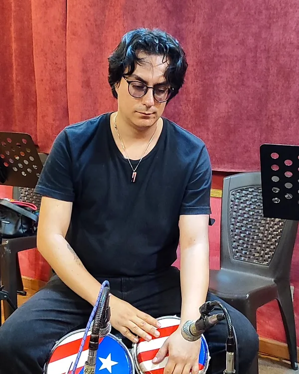

Balance antes de efectos
Empieza con faders y panorama. Escucha el elemento principal y deja margen antes de ecualizar.
GRATIS · EN TU NAVEGADOR
Crea, escucha, aprende y termina tus experimentos con las herramientas de Walamort reunidas en un solo lugar.

Los ajustes de cada herramienta se guardan por separado en este navegador. Conserva tus originales y descarga tus proyectos.
Una ruta para empezar y volver a escuchar con intención.
Empieza con faders y panorama. Escucha el elemento principal y deja margen antes de ecualizar.
En EQ, mueve una banda y ajusta su Q. Compara con bypass a volumen parecido; un realce no siempre mejora el sonido.
Compara ataque rápido y lento; ajusta umbral y ratio. Escucha el golpe inicial y el cuerpo por separado.
Escoge un ritmo, cambia sus golpes y organiza verso y coro. Guarda el patrón y exporta MIDI para continuarlo en otro programa.
Activa el micrófono solo cuando vayas a grabar. Revisa el nivel, escucha la toma y ajusta sus regiones sin perder el original.
Escoge canción, podcast o voz. Compara Original/Procesado, revisa picos y escucha el WAV exportado completo.
El audio propio se procesa localmente. El navegador no conserva tus canciones al cerrar: vuelve a seleccionar los originales. Descarga tus versiones y sus créditos antes de salir. La biblioteca de stems requiere conexión y cada recurso conserva sus condiciones de uso.
Mezcla: EQ de seis bandas, compresión, reverb, delay, comparación A/B, pico/RMS y captura WAV en tiempo real. Preparación local: hasta 30 segundos, reducción de ruido por muestra y separación armónico/percusión en dos capas; no separa voz/bajo/batería mediante IA. Mastering ofrece puntos de partida editables, sin normalización LUFS ni true peak.
La distribución 5.1 y la escucha binaural son herramientas experimentales de aprendizaje. No codifican Dolby Atmos ni sustituyen una sala calibrada. Cada módulo conserva sus propios formatos y límites de exportación; no hay una sesión compartida automática entre herramientas.